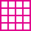
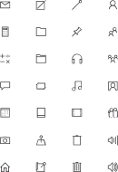

Color palettes
Iconography . Imagery . Illustrations
Typography

Design grids
Platform influence
ABCDEFGHIJKLMNOPQRS
abcdefghijklmnopqrstuvwxyz
1234567890@#$%&*
ABCDEFGHIJKLMNOPQRS
abcdefghijklmnopqrstuvwxyz
1234567890@#$%&*
ABCDEFGHIJKLMNOPQRS
abcdefghijklmnopqrstuvwxyz
1234567890@#$%&*
ABCDEFGHIJKLMNOPQRS
abcdefghijklmnopqrstuvwxyz
1234567890@#$%&*
We start with a 4px grid as we design for all platforms. We use consistent grid units for similar design elements
We use the grid to create common margins, columns and containers
Type snaps to a baseline grid
O365
Fresh
Metro 2.0
